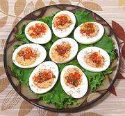

|
Eggs, Stuffed & GarnishedCalifornia | ||||
| Makes: Effort: Sched: DoAhead: |
24 ea *** 2-1/2 hrs Yes |
Delicious Stuffed Eggs by a recipe reflecting the substantial Korean influence here in Southern California. These will go over very well at parties. | |||
| For parties, I make them them a few hours ahead and refrigerate them in 7-1/2 x 8 inch plastic clamshells, which hold 12 each securely. I always make plenty of extras to bring out when the first round is gone, which happens quickly. | |||||
|
12 ------- 1 5 2 2 2 1/2 2 1/3 ------- ar 3 1-1/2 |
--- c cl T T T t t t --- |
Eggs, ExL -- Stuffing Mayonnaise (1) Garlic Rice Vinegar Kimchee Juice (2) Gochujang (3) Sesame Oil, dark Salt Pepper -- Garnish Sesame, toasted (4) Kimchee (2) Scallions |
Make - (2-1/2 hr - 45 min work)
|